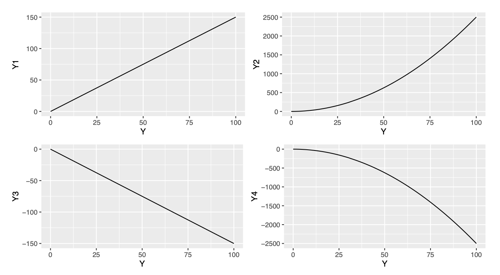

library(tidyverse)
library(ggfortify)
ggplot(apple, aes(x=Time, y=Revenue)) +
geom_line()
library(tidyverse)
library(ggfortify)
ggplot(apple, aes(x=Time, y=Revenue)) +
geom_line()
Some notation:
\(t = 1,2,3,...\), time index
\(Y_t\), is the value: of the variable of interest at time \(t\)
\(Y_t\) may be composed of one or more components:
Trend
Seasonal
Cyclical
Random



Real time series will usually include a combination of these four components. We will model the time series \(Y_t\) either additively:
\[ Y_t = \text{Trend} + \text{Seasonal} + \text{Random} = T_t +S_t +E_t \] Or multiplicatively: \[ Y_t = \text{Trend}\cdot\text{Seasonal}\cdot\text{Random}= T_t \cdot S_t \cdot E_t \] * (\(E_t\) consists of both the cyclic and error components, as both are unpredictable.) This model can be rewritten as a log model: \[ \log{Y_t} = \log(T_t) + \log(S_t) + \log(E_t) \]
\[ Y_t = \text{Trend} + \text{Seasonal} + \text{Random} = T_t +S_t +E_t \]
Most appropriate when seasonal fluctuations are consistent (do not increase or decrease over time)
The trend component \(T_t\) is a function of t (e.g., linear or quadratic)
The seasonal component \(S_t\) is a set of dummy variable representing “seasons”
So we can estimate additive models using regular regression
library(tidyverse)
ggplot(apple, aes(x=Time, y=Revenue)) +
geom_line()
lm_additive = lm(Revenue ~ Period + Quarter, data=apple)
summary(lm_additive)
Call:
lm(formula = Revenue ~ Period + Quarter, data = apple)
Residuals:
Min 1Q Median 3Q Max
-22.496 -5.135 1.280 4.923 17.928
Coefficients:
Estimate Std. Error t value Pr(>|t|)
(Intercept) 33.93619 2.74731 12.353 < 0.0000000000000002 ***
Period 1.41324 0.05917 23.884 < 0.0000000000000002 ***
QuarterQ2 -20.62657 2.89298 -7.130 0.000000002310936 ***
QuarterQ3 -27.44818 2.89480 -9.482 0.000000000000362 ***
QuarterQ4 -24.20276 2.89298 -8.366 0.000000000022170 ***
---
Signif. codes: 0 '***' 0.001 '**' 0.01 '*' 0.05 '.' 0.1 ' ' 1
Residual standard error: 7.921 on 55 degrees of freedom
Multiple R-squared: 0.9269, Adjusted R-squared: 0.9216
F-statistic: 174.4 on 4 and 55 DF, p-value: < 0.00000000000000022The trend that we can infer from the variable Period indicates a positive growth in revenue of US$ 1.4 billion for each increase in the periods.
The seasonal from the Quarter component indicates:
Q2’s are expected to be $20.7 worse than Q1’sQ3’s are expected to be $27.4 worse than Q1’sQ4’s are expected to be $24.2 worse than Q1’sQ3’s are significantly worse than Q1’sconfint(lm_additive))ggplot(apple, aes(x = Time, y = Revenue)) +
geom_line() +
geom_line(aes(x = Time, y = predict(lm_additive)), col = "orange") 
Quarter component indicates: for Apple in 2024 Q3?predict(lm_additive, list(Period = 61, Quarter = "Q3"), interval = "prediction") fit lwr upr
1 92.69571 75.86745 109.524Quarter component indicates: for Apple in 2030 Q1? (Should we trust that prediction?)ggplot(apple, aes(x = Time, y = Revenue)) +
geom_line(aes(x = Time, y = residuals(lm_additive)))How we deal with the time dependence ? Key idea: Instead of predicting \(Y_t\) as a function of \(t\) (or other variables), predict \(Y_t\) as a function of \(Y_{t-1}\): \[ Y_t = \beta_0 + \beta_1 Y_{t-1} + e_t \]
\(Y_{t-1}\) is called the “1st lag” of \(Y\)
This is called autoregressive (AR) because it predicts the values of a time series based on previous values
The model above is an AR(1) model
We can have AR(\(p\)) models, with lag \(p\)
Autocorrelation, is the correlation of \(Y_t\) with each of its lags \(Y_t, Y_{t−1},\dots\) \[ Cor(Y_t, Y_{t−1}), Cor(Y_t, Y_{t−2}),\dots \]
We also have the autocorrelation of the residuals, \(r_t\)’s, which indicates that there’s a strong indication that the independence assumption is violated \[ Cor(r_t, r_{t−1}), Cor(r_t, r_{t−2}),\dots \]
ggplot(ozone, aes(x = day, y = ozone)) +
geom_line()
acf(ozone$ozone)lag function to create the lagged observationsozone <- ozone %>%
mutate(lag1=lag(ozone))
ozone.model = lm(ozone ~ lag1, data=ozone)
summary(ozone.model)
Call:
lm(formula = ozone ~ lag1, data = ozone)
Residuals:
Min 1Q Median 3Q Max
-13.192 -3.464 -1.108 2.679 16.679
Coefficients:
Estimate Std. Error t value Pr(>|t|)
(Intercept) 6.87446 1.06976 6.426 0.00000000276 ***
lag1 0.40419 0.08381 4.823 0.00000419740 ***
---
Signif. codes: 0 '***' 0.001 '**' 0.01 '*' 0.05 '.' 0.1 ' ' 1
Residual standard error: 4.999 on 120 degrees of freedom
(1 observation deleted due to missingness)
Multiple R-squared: 0.1624, Adjusted R-squared: 0.1554
F-statistic: 23.26 on 1 and 120 DF, p-value: 0.000004197Linearity, Normality, Equal Variance: Check using residual plot (linearity + homoscedasticity), Q-Q plot (normality), scale/location (homoscedasticity) like any other regression model
Independence: Since this is a time series, we can actually check this by looking at the autocorrelation of the residuals (we want no significant autocorrelation)
autoplot(ozone.model)
acf(ozone.model$residuals)| Type | Model | Predicted \(Y_t\) |
|---|---|---|
| White noise | \(Y_t = e_t\) | \(0\) |
| Random sample | \(Y_t = \beta_0 + e_t\) | \(\widehat{\beta}_0\) (or average \(Y\)) |
| Random walk | \(Y_t = \beta_0 + Y_{t-1} + e_t\) | \(\widehat{\beta}_0 + Y_{t-1}\) |
| General AR(1) | \(Y_t = \beta_0 + \beta_1 Y_{t-1} + e_t\) | \(\widehat{\beta}_0 + \widehat{\beta}_1 Y_{t-1}\) |
confint(ozone.model) 2.5 % 97.5 %
(Intercept) 4.7564110 8.9925161
lag1 0.2382561 0.5701286lag1.\[ \log(\texttt{Revenue}_t) = \log(\texttt{Period}_t) + \texttt{Quarter}_t + \log(\texttt{Revenue}_{t-1}) \]
We need to create the lag variable.
It will have only one lag, and thus is an AR(1) model.
apple = apple %>%
mutate(lag1 = lag(Revenue)) log_apple = lm(log(Revenue) ~ log(Period) + Quarter + log(lag1), data = apple)
summary(log_apple)
Call:
lm(formula = log(Revenue) ~ log(Period) + Quarter + log(lag1),
data = apple)
Residuals:
Min 1Q Median 3Q Max
-0.204851 -0.056602 0.005991 0.066084 0.193337
Coefficients:
Estimate Std. Error t value Pr(>|t|)
(Intercept) 1.14400 0.17945 6.375 0.00000004558506504 ***
log(Period) 0.20622 0.06918 2.981 0.00433 **
QuarterQ2 -0.53559 0.04911 -10.906 0.00000000000000372 ***
QuarterQ3 -0.47076 0.03397 -13.859 < 0.0000000000000002 ***
QuarterQ4 -0.31872 0.03346 -9.526 0.00000000000044727 ***
log(lag1) 0.63410 0.10109 6.273 0.00000006650534405 ***
---
Signif. codes: 0 '***' 0.001 '**' 0.01 '*' 0.05 '.' 0.1 ' ' 1
Residual standard error: 0.09013 on 53 degrees of freedom
(1 observation deleted due to missingness)
Multiple R-squared: 0.9751, Adjusted R-squared: 0.9728
F-statistic: 415.4 on 5 and 53 DF, p-value: < 0.00000000000000022
confint(log_apple) 2.5 % 97.5 %
(Intercept) 0.78406737 1.5039420
log(Period) 0.06746219 0.3449861
QuarterQ2 -0.63409896 -0.4370871
QuarterQ3 -0.53888914 -0.4026276
QuarterQ4 -0.38583509 -0.2516142
log(lag1) 0.43133359 0.8368601The slope associated with lag is statistically significant, and its value is between minus and plus one; we have that this is a mean-reverting time series.
We also have a better fit (here we feed lag1 with prediction from the previous period, US$ 90.75 billions):
exp(predict(log_apple, list(Period = 61, Quarter = "Q3", lag1 = 90.75), interval = "prediction")) fit lwr upr
1 79.80492 66.06926 96.39618
To building a time series model:
Start with a an additive or multiplicative model with trend and seasonal components. (Plot your data! If the seasonal variation increases or decreases over time you’ll want a multiplicative model.)
Examine the usual diagnostic plots, and plot your residuals as a function of time. Do you need a (different) nonlinear time trend? A transformation of \(Y\)?
Check your residuals for autocorrelation. If it’s present, add appropriate lag terms to your model.